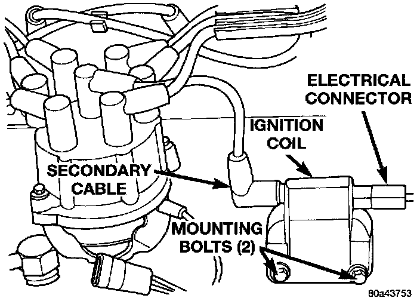

Ignition Coil: Service and Repair
IGNITION COILThe ignition coil is an epoxy filled type. If the coil is replaced, it must be replaced with the same type.
REMOVAL
Fig. 28 Coil Location:

The ignition coil is mounted to a bracket on the side of the engine to the front of the distributor (Fig. 28).
1. Disconnect the ignition coil secondary cable from ignition coil (Fig. 28).
2. Disconnect engine harness connector from ignition coil.
3. Remove ignition coil mounting bolts (nuts may also be used on back side of bracket).
4. Remove coil.
INSTALLATION
1. Install ignition coil to bracket. If nut and bolts are used to secure coil to coil bracket, tighten to 11 Nm (100 in. lbs.) torque. If bolts are used, tighten bolts to 5 Nm (50 in. lbs.) torque.
2. Connect engine harness connector to coil.
3. Connect ignition coil cable to ignition coil.